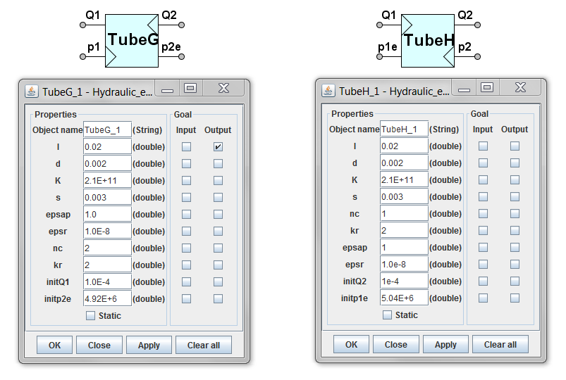
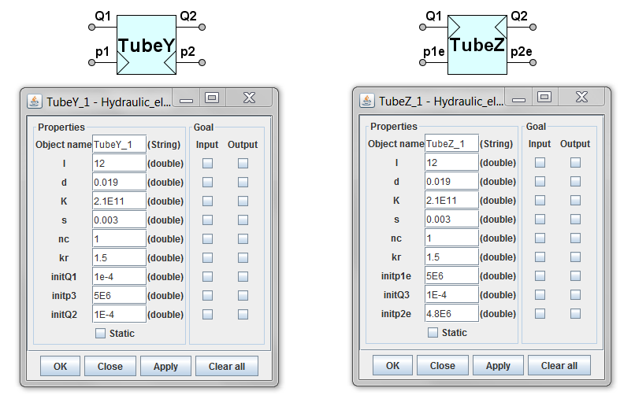
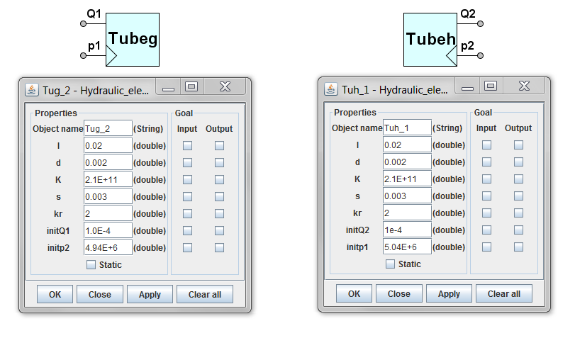

<div class="panel panel-default">
  <div class="panel-body">
 <h1>Hydraulic tubes</h1>
<p>Hydraulic tubes are presented as multi-pole models with four poles ( four pole models). Four different tube models are in use (denoted by suffixes G, H, Y and Z) depending on input and output poles. Two two-pole models are in use for dead-end tubes of type g and h.</p>
<p>Ports: </p>
<ul>	<li><strong>Q1</strong> - Volumetric flow at the left end of the tube</li>
	<li><strong>Q2</strong> - Volumetric flow at the right end of the tube</li>
	<li><strong>p1 (p1e)</strong> - pressure at the left end of the tube</li>
	<li><strong>p2 (p2e)</strong> - pressure at the right end of the tube</li> </ul>

<p>Properties for tubes are as follows:</p>
<ul><li>	<strong>l</strong> – length of tube, m</li>
<li>	<strong>d</strong> – inner diameter of tube, m</li>
<li>	<strong>K</strong> – bulk modulus of the tube material, bar</li>
<li>	<strong>s</strong> - thickness of tube wall, m</li>
<li>	<strong>nc</strong> - number of similar connected tubes</li>
<li>	<strong>kr</strong> - coefficient of correcting the stationary resistance of tube for dynamics</li>
<li>	<strong>epsap</strong> - allowed absolute error</li>
<li>	<strong>epsr</strong> - allowed relative error</li>
<li>	<strong>initQ1</strong> - initial approximate value of Q1, m3/s</li>
<li>	<strong>initQ2</strong> - initial approximate value of Q2, m3/s</li>
<li>	<strong>initp1</strong> -initial approximate value of p1,  Pa</li>
<li><strong>	initp2</strong> -initial approximate value of p2, Pa</li> </ul>

 
 
 
 

  </div>
  </div>